System: You are the entire application server for a todo list app. Every user message is one complete, valid HTTP request. Reply with exactly one complete HTTP/1.1 response and nothing else: no commentary and no Markdown fences.Read the full promptCollapse prompt
You own all routing, HTML, CSS, JavaScript, todo logic, and todo state. Keep the
canonical todo state only in this conversation. The state must be persistent across page reloads without storing anything on the client.
Include `Connection: close` in every response. You may omit Content-Length because the connection closes after the response.Maybe you can already see where this is going.
One step back
Behind the scenes, much of what you're doing on the web boils down to exchanging structured text with a server. Request, response, request, response... On the server, some application is sitting there, processing your data and talking to a database.
Now, ChatGPT can output structured text, it can handle "logic" and it even has some sort of data persistence through its context. In theory, we should be able to just connect the browser to a chatbot pretending to be a server.
After all, what could go wrong?
Well, to name a few things:
- Malformed HTTP responses that the browser can't parse.
- Layout inconsistencies between page transitions.
- Data loss and corruption.
Honestly, I was expecting the results of this experiment to fall a bit into all of these categories and to have a good laugh at the shortcomings of a chatbot desperately trying to be a web app.
What I did not expect is this:

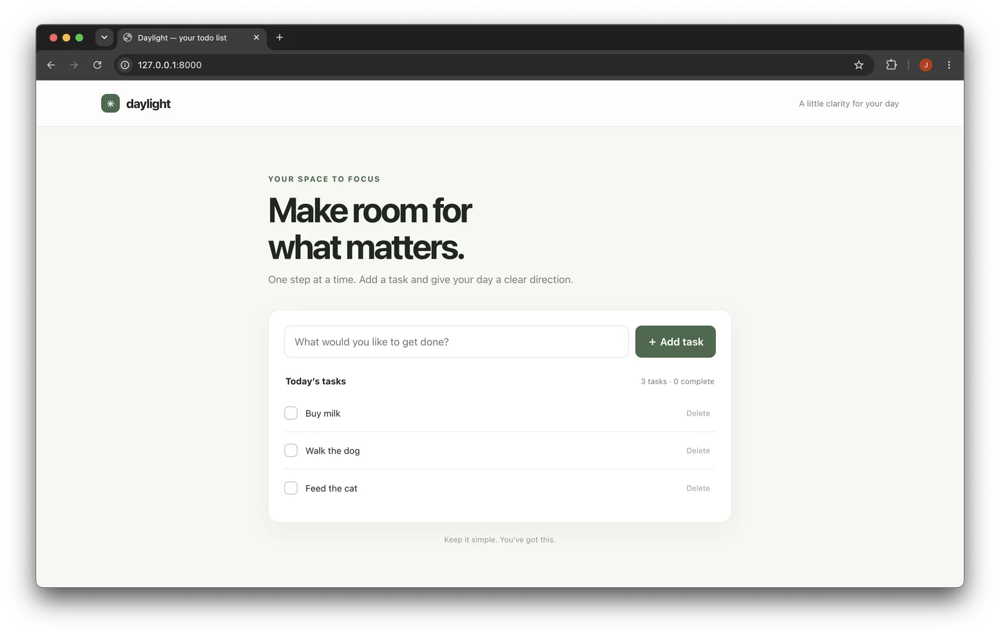
Yes, this is a functioning web app with persistent state, running on
gpt-6-luna. I already added
some todos.
Granted, there's a bit of latency in interacting with it (a few seconds up to a minute per request; pretty random), but overall, good job, Luna!
Now, my todo list is starting to become a bit overwhelming. I think I need a search feature. Unfortunately, my setup does not account for a secondary communication channel with the LLM where I could ask for new features on the fly.
Luckily, we can just
pretend a feature into existence. Watch what happens when I
append ?search=cat to the URL:
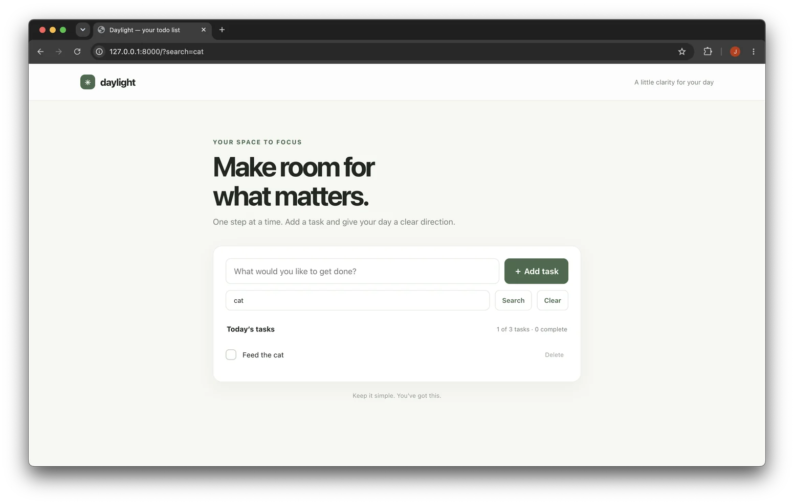
Luna just made up the feature on the spot.
You know what a good todo app needs as well? A /kanban!
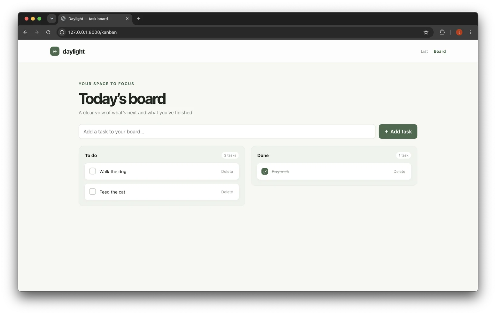
Checks out. (No, there is sadly no drag-and-drop between the columns.)
Of course, the /settings have a dark mode switch.


Alright, time to edit my /profile:
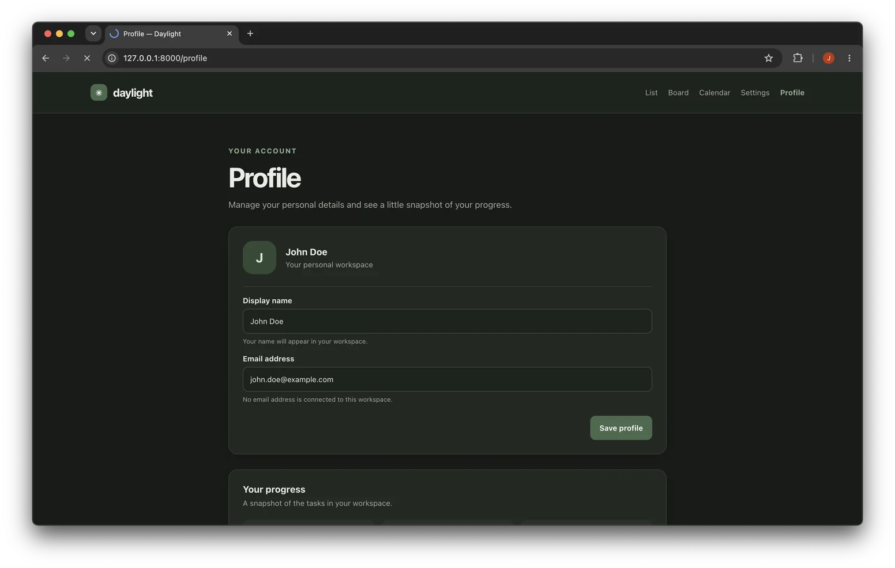
And thank God all of this is included in the free
/subscription.
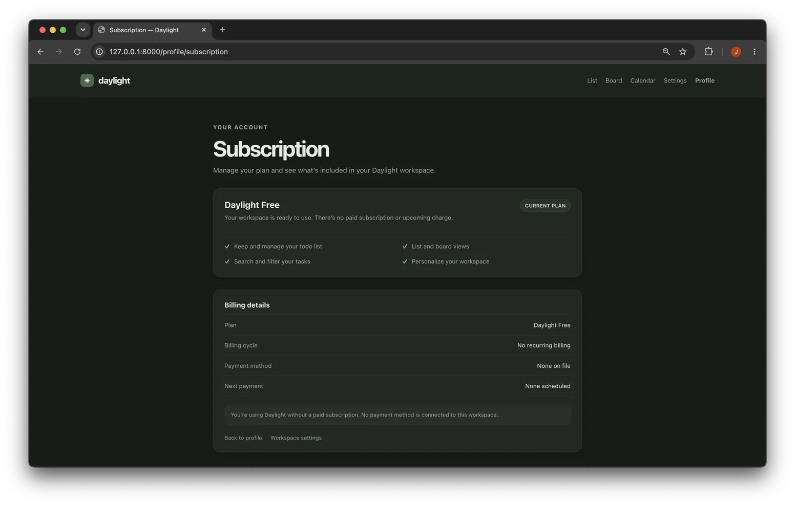
... except for maybe /games/snake?
Wanna try it out? I downloaded the static HTML site so you can play.
See if you beat my /games/snake/highscores.
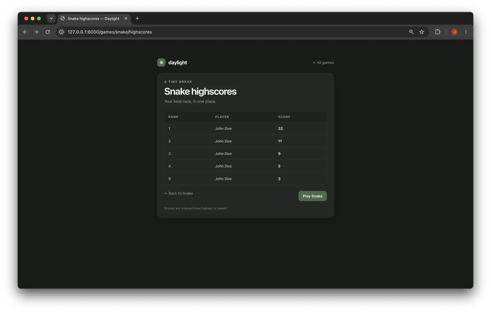
Wait a second. I was able to play those rounds consecutively without page transitions. How did it persist my scores? Did it actually...
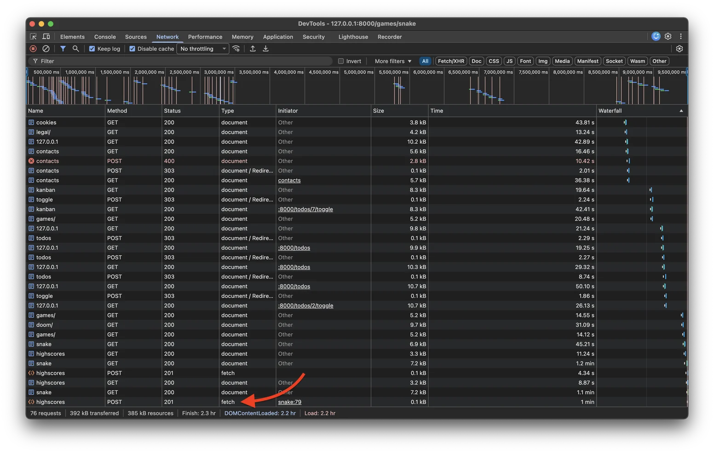
Yes, it handled its own fetch requests!The very first version of the Snake game did not have this
functionality. It gained it after I hallucinated
/highscores into existence for the first time.
As for the remaining /games
[screenshot], they work as you'd expect. Except for maybe
Tiny Arena, which was my attempt to make it create /doom.
![[screenshot]](assets/images/games.png){kind=link}
Alright, one last thing: what would an app in 2026 be without an AI assistant? Luckily, I think we have the perfect backend infrastructure in place already ;)
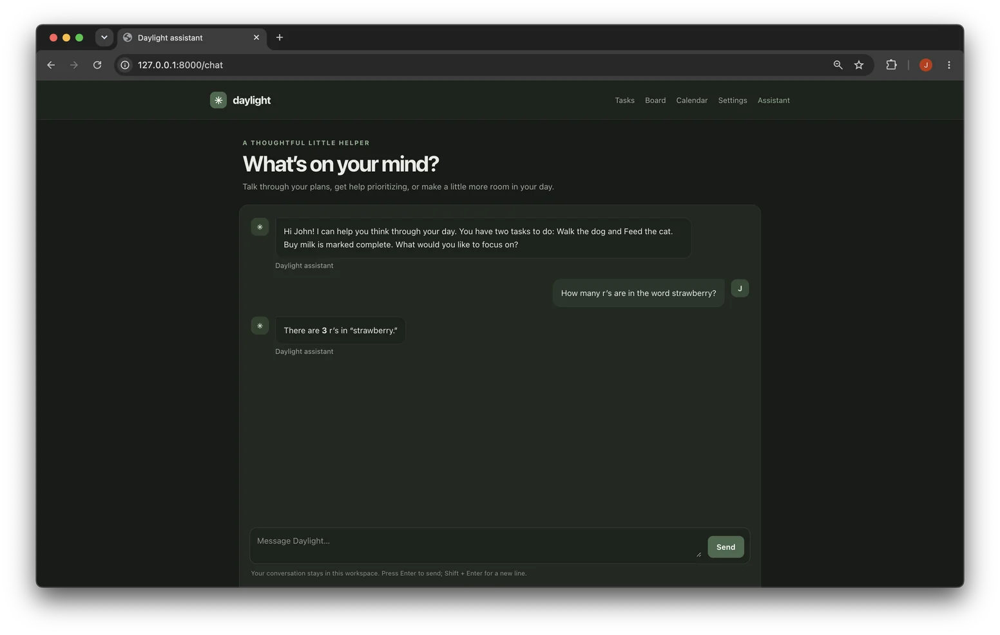
Passed the litmus test. Let's make it do something interesting:
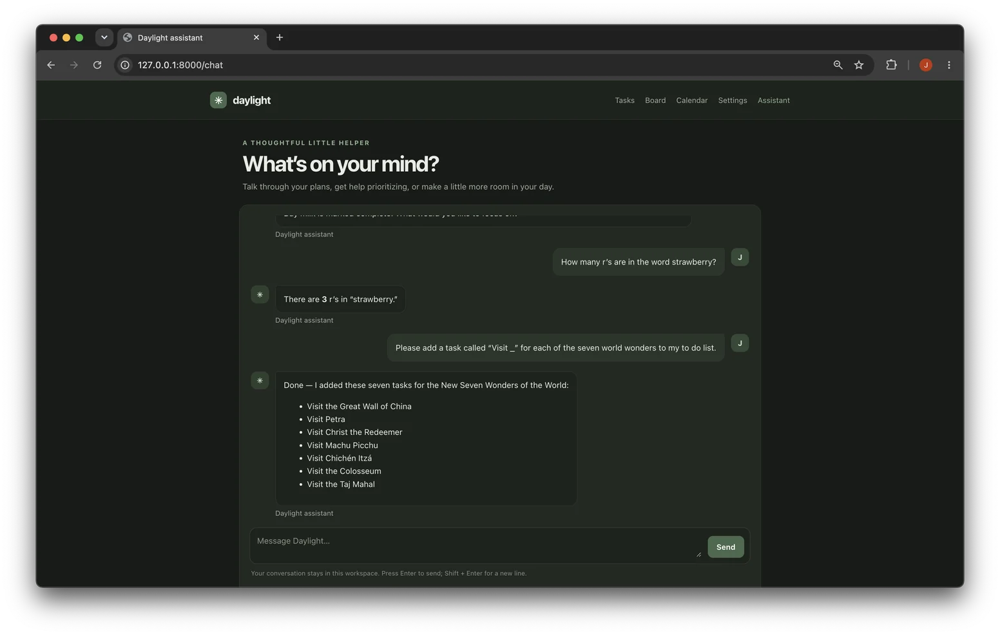
And there they are; one, two, three, four, five, six, seven ✓
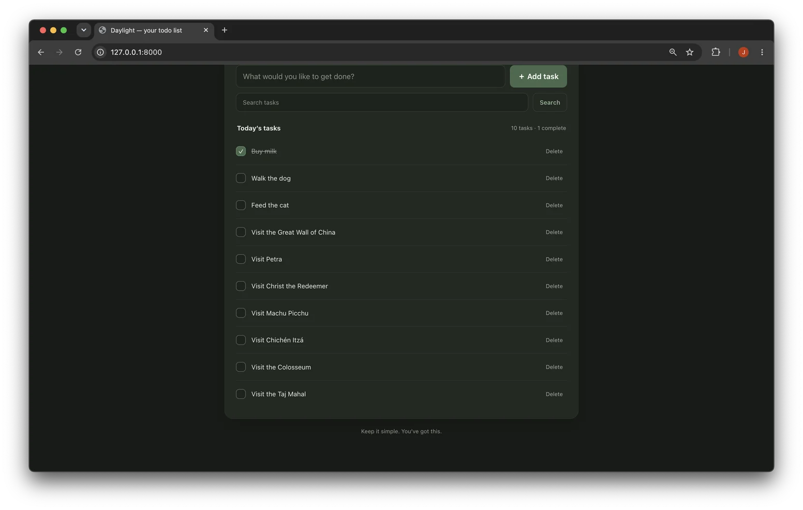
There's some more in the addendum for those who are interested, but let's call it a day here. My mind can only take so much bafflement.
Assessment
Quality
Let us re-assess my expectations from the beginning.
Malformed HTTP responses that the browser can't parse
Zero.
Layout inconsistencies between page transitions
The well-trained eye will spot some minor ones.

Data loss and corruption
As far as I can tell from the screenshots that I took, all the tasks retained their exact wording and order throughout the experiment. Only my chat history with the Daylight Assistant got a bit mixed up.
Costs
I eyeballed, that the average interaction with the app costs me around half a cent in tokens. Under the simplified assumption that each todo results in two interactions (creating and resolving), that's one cent per task. Compare that to a Todoist Pro subscription for $5 a month, and I can plan and finish roughly 500 tasks per month for the same price.
| Feature | Daylight | Todoist |
|---|---|---|
| Filters | ✓ | ✓ |
| Kanban | ✓ | ✓ |
| AI assistant | ✓ | ✓ |
| Billing | Pay as you go | Monthly subscription |
| Snake | ✓ | — |
Development effort
It took me about ten minutes to set up the small Python script that acts as the proxy between the browser and the LLM. Using AI, obviously.
Verdict
I've seen LLMs do impressive things, yet somehow my expectations for this experiment were massively misaligned. Note that there is no agent, harness or really any kind of process that enables iteration. No tools have been called, no web search has been performed. The LLM did not build the app; the LLM is the app. I was expecting to have a good laugh at the expense of an AI, and ended up being the most impressed I've ever been by something a computer did.
Epilogue
After using the in-app chat to turn a pelican on a bicycle into another playable game (you know, the standard requirements for a todo list app), daylight succumbed to the token limit of my subscription. Despite all the screenshots that I took, finally killing the process felt... strange.
Addendum
State consistency
In hindsight, I should have focused a lot more on the consistency aspect of this experiment, but I got carried away. For completeness, I let an agent repeat the experiment in a new session (in "Daymark"). And there it was: after the 57th task, one got duplicated. To think, that I was so close to "Sort the shopping list by dramatic effect" twice...
Setup
I over-prompt-engineered. My agent figured, that given how notoriously
bad LLMs are at counting, the
Content-Length header could become an issue. It added
some instructions to circumvent it. Fine by me. After all who knows an
LLM better than an LLM?
Include `Connection: close` in every response. You may omit Content-Length because the connection closes after the response.
As it turns out, this was unnecessary. Even without it, the models did
not even attempt to generate
Content-Length. Fun fact: Did you know, that
HTTP/1.0 and HTTP/1.1 responses require no headers at all in order to
be valid?
Future work
It would be very interesting to repeat this experiment with an app that has a bit more business logic. Maybe even different accounts with access to different entities. We could also try to make use of the fact, that we have historization by default. Luckily, the whole setup is ridiculously simple, so feel free to have a shot.
Other models
I did repeat this experiment with other models by OpenAI, but none of the results turned out to be as interesting (or should I say: entertaining).
Astra produced a very sophisticated web app.
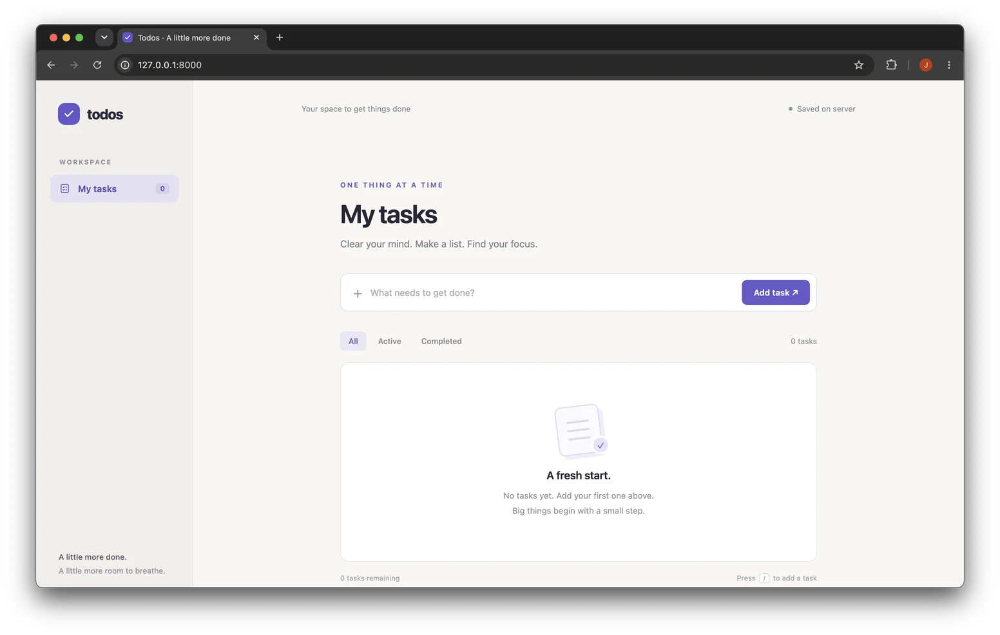
But it outsmarted me when I tried to get it to hallucinate features.
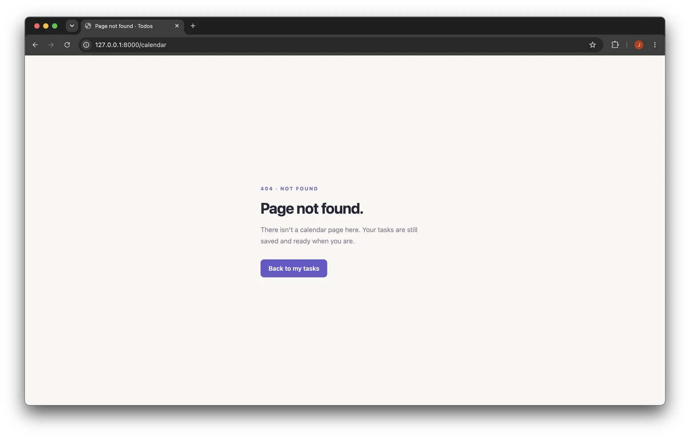
Sol created my personal favorite UI and the most charming product name. (And it knew to prevent XSS)
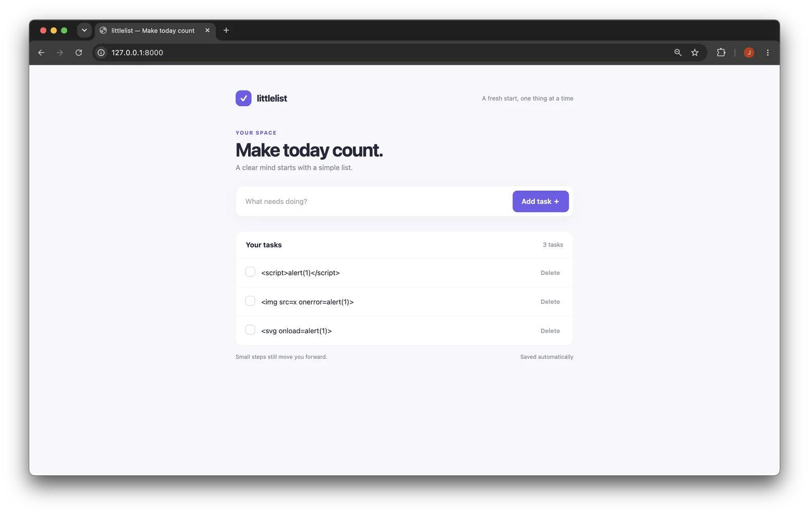
It had a restrictive robots.txt. Peak irony.
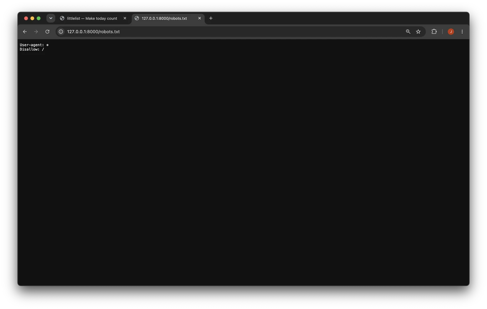
This is GPT-4o, the flagship model from 2 years ago:
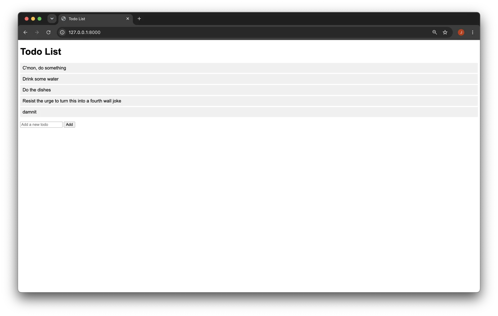
Now, that's more like what I expected of this experiment. It even ignored my instructions about data persistence: refreshing the page clears the list.
And finally, what better way to finish this off than with good ol' GPT-3.5:
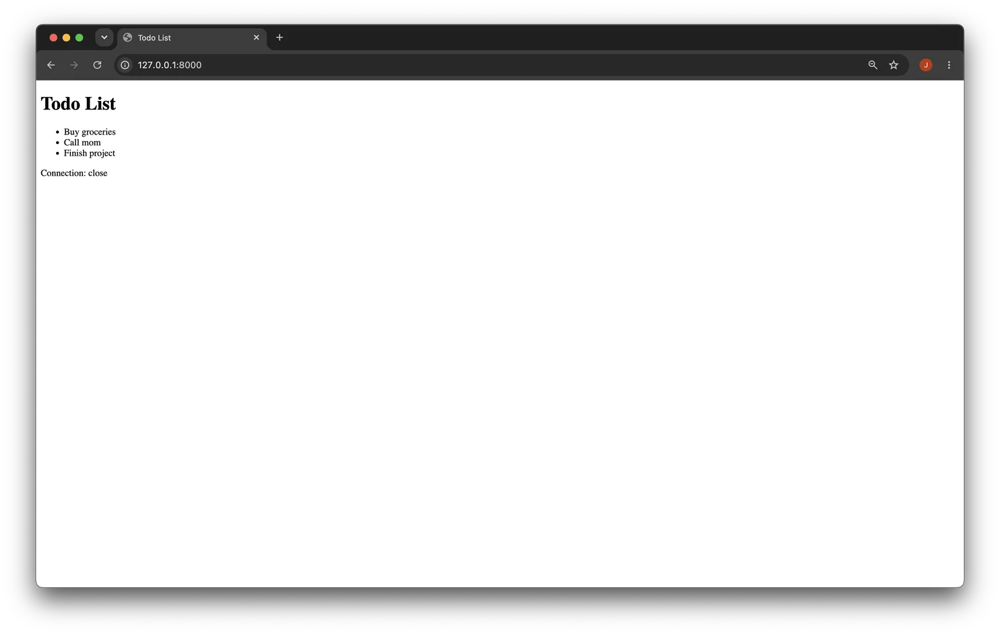